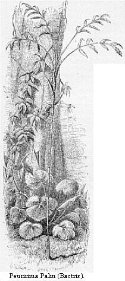

Departure from Obydos — River Banks and By-channels — Cacao Planters — Daily Life on Board Our Vessel — Great Storm — Sand-island and its Birds — Hill of Parentins — Negro Trader and Mauhés Indians — Villa Nova, its Inhabitants, Forest, and Animal Productions — Cararaucú — A rustic Festival — Lake of Cararaucú — Motúca Flies — Serpa — Christmas Holidays — River Madeira — A Mameluco Farmer — Múra Indians — Rio Negro — Description of Barra — Descent to Pará — Yellow Fever.
A trader of Obydos, named Penna, was proceeding about in a cuberta laden with merchandise to the Rio Negro, intending to stop frequently on the road, so I bargained with him for a passage. He gave up a part of the toldo, or fore-cabin as it may be called, and here I slung my hammock and arranged my boxes so as to be able to work as we went along. The stoppages I thought would be an advantage, as I could collect in the woods whilst he traded, and thus acquire a knowledge of the productions of many places on the river which on a direct voyage would be impossible to do. I provided a stock of groceries for two months’ consumption; and, after the usual amount of unnecessary fuss and delay on the part of the owner, we started on the 19th of November. Penna took his family with him: this comprised a smart, lively mameluco woman, named Catarina, whom we called Senhora Katita, and two children. The crew consisted of three men: one a sturdy Indian, another a Cafuzo, godson of Penna, and the third, our best hand, a steady, good-natured mulatto, named Joaquim. My boy Luco was to assist in rowing and so forth. Penna was a timid middle-aged man, a white with a slight cross of Indian; when he was surly and obstinate, he used to ask me to excuse him on account of the Tapuyo blood in his veins. He tried to make me as comfortable as the circumstances admitted, and provided a large stock of eatables and drinkables; so that altogether the voyage promised to be a pleasant one.
On leaving the port of Obydos, we crossed over to the right bank and sailed with a light wind all day, passing numerous houses, each surrounded by its grove of cacao trees. On the 20th we made slow progress. After passing the high land at the mouth of the Trombetas, the banks were low, clayey, or earthy on both sides. The breadth of the river varies hereabout from two and a half to three miles, but neither coast is the true terra firma. On the northern side a by-channel runs for a long distance inland, communicating with the extensive lake of Faro; on the south, three channels lead to the similar fresh-water sea of Villa Franca; these are in part arms of the river, so that the land they surround consists, properly speaking, of islands. When this description of land is not formed wholly of river deposit, as sometimes happens, or is raised above the level of the highest floods, it is called Ygapó alto, and is distinguished by the natives from the true islands of mid-river, as well as from the terra firma. We landed at one of the cacao plantations. The house was substantially built; the walls formed of strong upright posts, lathed across, plastered with mud and whitewashed, and the roof tiled. The family were mamelucos, and seemed to be an average sample of the poorer class of cacao growers. All were loosely dressed and bare-footed. A broad verandah extended along one side of the house, the floor of which was simply the well-trodden earth; and here hammocks were slung between the bare upright supports, a large rush mat being spread on the ground, upon which the stout matron-like mistress, with a tame parrot perched upon her shoulder, sat sewing with two pretty little mulatto girls. The master, coolly clad in shirt and drawers, the former loose about the neck, lay in his hammock smoking a long gaudily-painted wooden pipe. The household utensils, earthenware jars, water-pots and saucepans lay at one end, near which was a wood fire, with the ever-ready coffee-pot simmering on the top of a clay tripod. A large shed stood a short distance off, embowered in a grove of banana, papaw, and mango trees; and under it were the ovens, troughs, sieves, and all other apparatus for the preparation of mandioca. The cleared space around the house was only a few yards in extent; beyond it lay the cacao plantations, which stretched on each side parallel to the banks of the river. There was a path through the forest which led to the mandioca fields, and several miles beyond to other houses on the banks of an interior channel. We were kindly received, as is always the case when a stranger visits these out-of-the-way habitations; the people being invariably civil and hospitable. We had a long chat, took coffee, and upon departing, one of the daughters sent a basket full of oranges for our use down to the canoe.
The cost of a cacao plantation in the Obydos district is after the rate of 240 reis or sixpence per tree, which is much higher than at Cametá, where I believe the yield is not so great. The forest here is cleared before planting, and the trees are grown in rows. The smaller cultivators are all very poor. Labour is scarce; one family generally manages its own small plantation of 10,000 to 15,000 trees, but at the harvest time neighbours assist each other. It appeared to me to be an easy, pleasant life; the work is all done under shade, and occupies only a few weeks in the year. The incorrigible nonchalance and laziness of the people alone prevent them from surrounding themselves with all the luxuries of a tropical country. They might plant orchards of the choicest fruit trees around their houses, grow Indian corn, and rear cattle and hogs, as intelligent settlers from Europe would certainly do, instead of indolently relying solely on the produce of their small plantations, and living on a meagre diet of fish and farinha. In preparing the cacao they have not devised any means of separating the seeds well from the pulp, or drying it in a systematic way; the consequence is that, although naturally of good quality, it molds before reaching the merchants’ stores, and does not fetch more than half the price of the same article grown in other parts of tropical America. The Amazons region is the original home of the principal species of chocolate tree, the Theobroma cacao; and it grows in abundance in the forests of the upper river. The cultivated crop appears to be a precarious one; little or no care, however, is bestowed on the trees, and even weeding is done very inefficiently. The plantations are generally old, and have been made on the low ground near the river, which renders them liable to inundation when this rises a few inches more than the average. There is plenty of higher land quite suitable to the tree, but it is uncleared, and the want of labour and enterprise prevents the establishment of new plantations.
We passed the last houses in the Obydos district on the 20th, and the river scenery then resumed its usual wild and solitary character, which the scattered human habitations relieved, although in a small degree. We soon fell into a regular mode of life on board our little ark. Penna would not travel by night; indeed, our small crew, wearied by the day’s labour, required rest, and we very rarely had wind in the night. We used to moor the vessel to a tree, giving out plenty of cable, so as to sleep at a distance from the banks and free of mosquitoes, which although swarming in the forest, rarely came many yards out into the river at this season of the year. The strong current at a distance of thirty or forty yards from the coast steadied the cuberta head to stream, and kept us from drifting ashore. We all slept in the open air, as the heat of the cabins was stifling in the early part of the night. Penna, Senhora Katita, and I slung our hammocks in triangle between the mainmast and two stout poles fixed in the raised deck. A sheet was the only covering required, besides our regular clothing, for the decrease of temperature at night on the Amazons is never so great as to be felt otherwise than as a delightful coolness after the sweltering heat of the afternoons. We used to rise when the first gleam of dawn showed itself above the long, dark line of forest. Our clothes and hammocks were then generally soaked with dew, but this was not felt to be an inconvenience. The Indian Manoel used to revive himself by a plunge in the river, under the bows of the vessel. It is the habit of all Indians, male and female, to bathe early in the morning; they do it sometimes for warmth’s sake, the temperature of the water being often considerably higher than that of the air. Penna and I lolled in our hammocks, whilst Katita prepared the indispensable cup of strong coffee, which she did with wonderful celerity, smoking meanwhile her early morning pipe of tobacco. Liberal owners of river craft allow a cup of coffee sweetened with molasses, or a ration of cashaca, to each man of their crews; Penna gave them coffee. When all were served, the day’s work began. There was seldom any wind at this early hour, so if there was still water along the shore, the men rowed, if not, there was no way of progressing but by espia. In some places the currents ran with great force close to the banks, especially where these receded to form long bays or enseadas, as they are called, and then we made very little headway. In such places the banks consist of loose earth, a rich crumbly vegetable mold supporting a growth of most luxuriant forest, of which the currents almost daily carry away large portions, so that the stream for several yards out is encumbered with fallen trees whose branches quiver in the current. When projecting points of land were encountered, it was impossible, with our weak crew, to pull the cuberta against the whirling torrents which set round them; and in such cases we had to cross the river, drifting often with the current, a mile or two lower down on the opposite shore. There generally sprung a light wind as the day advanced, and then we took down our hammocks, hoisted all sail, and bowled away merrily. Penna generally preferred to cook the dinner ashore, when there was little or no wind. About midday on these calm days, we used to look out for a nice shady nook in the forest with cleared space sufficient to make a fire upon. I then had an hour’s hunting in the neighbouring wilderness, and was always rewarded by the discovery of some new species. During the greater part of our voyage, however, we stopped at the house of some settler, and made our fire in the port. Just before dinner it was our habit to take a bath in the river, and then, according to the universal custom on the Amazons, where it seems to be suitable on account of the weak fish diet, we each took half a tea-cup full of neat cashaça, the “abre” or “opening,” as it is called, and set to on our mess of stewed pirarucú, beans, and bacon. Once or twice a week we had fowls and rice; at supper, after sunset, we often had fresh fish caught by our men in the evening. The mornings were cool and pleasant until towards midday; but in the afternoons, the heat became almost intolerable, especially in gleamy, squally weather, such as generally prevailed. We then crouched in the shade of the sails, or went down to our hammocks in the cabin, choosing to be half stifled rather than expose ourselves on deck to the sickening heat of the sun. We generally ceased travelling about nine o’clock, fixing upon a safe spot wherein to secure the vessel for the night. The cool evening hours were delicious; flocks of whistling ducks (Anas autumnalis), parrots, and hoarsely-screaming macaws, pair by pair, flew over from their feeding to their resting places, as the glowing sun plunged abruptly beneath the horizon. The brief evening chorus of animals then began, the chief performers being the howling monkeys, whose frightful unearthly roar deepened the feeling of solitude which crept up as darkness closed around us. Soon after, the fireflies in great diversity of species came forth and flitted about the trees. As night advanced, all became silent in the forest, save the occasional hooting of tree-frogs, or the monotonous chirping of wood-crickets and grasshoppers.
We made but little progress on the 20th and two following days, on account of the unsteadiness of the wind. The dry season had been of very brief duration this year; it generally lasts in this part of the Amazons from July to January, with a short interval of showery weather in November. The river ought to sink thirty or thirty-five feet below its highest point; this year it had declined only about twenty-five feet, and the November rains threatened to be continuous. The drier the weather the stronger blows the east wind; it now failed us altogether, or blew gently for a few hours merely in the afternoons. I had hitherto seen the great river only in its sunniest aspect; I was now about to witness what it could furnish in the way of storms.
On the night of the 22nd the moon appeared with a misty halo. As we went to rest, a fresh watery wind was blowing, and a dark pile of clouds gathered up river in a direction opposite to that of the wind. I thought this betokened nothing more than a heavy rain which would send us all in a hurry to our cabins. The men moored the vessel to a tree alongside a hard clayey bank, and after supper, all were soon fast asleep, scattered about the raised deck. About eleven o’clock I was awakened by a horrible uproar, as a hurricane of wind suddenly swept over from the opposite shore. The cuberta was hurled with force against the clayey bank; Penna shouted out, as he started to his legs, that a trovoada de cima, or a squall from up-river, was upon us. We took down our hammocks, and then all hands were required to save the vessel from being dashed to pieces. The moon set, and a black pall of clouds spread itself over the dark forests and river; a frightful crack of thunder now burst over our heads, and down fell the drenching rain. Joaquim leapt ashore through the drowning spray with a strong pole, and tried to pass the cuberta round a small projecting point, whilst we on deck aided in keeping her off and lengthened the cable. We succeeded in getting free, and the stout-built boat fell off into the strong current farther away from the shore, Joaquim swinging himself dexterously aboard by the bowsprit as it passed the point. It was fortunate for us that he happened to be on a sloping clayey bank where there was no fear of falling trees; a few yards farther on, where the shore was perpendicular and formed of crumbly earth, large portions of loose soil, with all their superincumbent mass of forest, were being washed away; the uproar thus occasioned adding to the horrors of the storm.
The violence of the wind abated in the course of an hour, but the deluge of rain continued until about three o’clock in the morning; the sky was lighted up by almost incessant flashes of pallid lightning, and the thunder pealing from side to side without interruption. Our clothing, hammocks, and goods were thoroughly soaked by the streams of water which trickled through between the planks. In the morning all was quiet, but an opaque, leaden mass of clouds overspread the sky, throwing a gloom over the wild landscape that had a most dispiriting effect. These squalls from the west are always expected about the time of the breaking up of the dry season in these central parts of the Lower Amazons. They generally take place about the beginning of February, so that this year they had commenced much earlier than usual. The soil and climate are much drier in this part of the country than in the region lying farther to the west, where the denser forests and more clayey, humid soil produce a considerably cooler atmosphere. The storms may be, therefore, attributed to the rush of cold moist air from up river, when the regular trade-wind coming from the sea has slackened or ceased to blow.
On the 26th we arrived at a large sand bank connected with an island in mid-river, in front of an inlet called Maracá-uassú. Here we anchored and spent half a day ashore. Penna’s object in stopping was simply to enjoy a ramble on the sands with the children, and give Senhora Katita an opportunity to wash the linen. The sandbank was now fast going under water with the rise of the river; in the middle of the dry season it is about a mile long and half a mile in width. The canoe-men delight in these open spaces, which are a great relief to the monotony of the forest that clothes the land in every other part of the river. Farther westward they are much more frequent, and of larger extent. They lie generally at the upper end of islands; in fact, the latter originate in accretions of vegetable matter formed by plants and trees growing on a shoal. The island was wooded chiefly with the trumpet tree (Cecropia peltata), which has a hollow stem and smooth pale bark. The leaves are similar in shape to those of the horse-chestnut, but immensely larger; beneath they are white, and when the welcome trade-wind blows they show their silvery undersides,—a pleasant signal to the weary canoe traveller. The mode of growth of this tree is curious: the branches are emitted at nearly right angles with the stem, the branchlets in minor whorls around these, and so forth, the leaves growing at their extremities, so that the total appearance is that of a huge candelabrum. Cecropiæ of different species are characteristic of Brazilian forest scenery; the kind of which I am speaking grows in great numbers everywhere on the banks of the Amazons where the land is low. In the same places the curious Monguba tree (Bombax ceiba) is also plentiful; the dark green bark of its huge tapering trunk, scored with grey, forming a conspicuous object. The principal palm tree on the lowlands is the Jauarí (Astryocaryum Jauarí), whose stem, surrounded by whorls of spines, shoots up to a great height. On the borders of the island were large tracts of arrow-grass (Gynerium saccharoides), which bears elegant plumes of flowers, like those of the reed, and grows to a height of twenty feet, the leaves arranged in a fan-shaped figure near the middle of the stem. I was surprised to find on the higher parts of the sandbank the familiar foliage of a willow (Salix Humboldtiana). It is a dwarf species, and grows in patches resembling beds of osiers; as in the English willows, the leaves were peopled by small chrysomelideous beetles. In wandering about, many features reminded me of the seashore. Flocks of white gulls were flying overhead, uttering their well-known cry, and sandpipers coursed along the edge of the water. Here and there lonely wading-birds were stalking about; one of these, the Curicáca (Ibis melanopis), flew up with a low cackling noise, and was soon joined by a unicorn bird (Palamedea cornuta), which I startled up from amidst the bushes, whose harsh screams, resembling the bray of a jackass, but shriller, disturbed unpleasantly the solitude of the place. Amongst the willow bushes were flocks of a handsome bird belonging to the Icteridæ or troupial family, adorned with a rich plumage of black and saffron-yellow. I spent some time watching an assemblage of a species of bird called by the natives Tumburí-pará, on the Cecropia trees. It is the Monasa nigrifrons of ornithologists, and has a plain slate-coloured plumage with the beak of an orange hue. It belongs to the family of Barbets, most of whose members are remarkable for their dull, inactive temperament. Those species which are arranged by ornithologists under the genus Bucco are called by the Indians, in the Tupí language, Tai-assú uirá, or pig-birds. They remain seated sometimes for hours together on low branches in the shade, and are stimulated to exertion only when attracted by passing insects. This flock of Tamburí-pará were the reverse of dull; they were gambolling and chasing each other amongst the branches. As they sported about, each emitted a few short tuneful notes, which altogether produced a ringing, musical chorus that quite surprised me.
On the 27th we reached an elevated wooded promontory, called Parentins, which now forms the boundary between the provinces of Pará and the Amazons. Here we met a small canoe descending to Santarem. The owner was a free negro named Lima, who, with his wife, was going down the river to exchange his year’s crop of tobacco for European merchandise. The long shallow canoe was laden nearly to the water level. He resided on the banks of the Abacaxí, a river which discharges its waters into the Canomá, a broad interior channel which extends from the river Madeira to the Parentins, a distance of 180 miles. Penna offered him advantageous terms, so a bargain was struck, and the man saved his long journey. The negro seemed a frank, straightforward fellow; he was a native of Pernambuco, but had settled many years ago in this part of the country. He had with him a little Indian girl belonging to the Mauhés tribe, whose native seat is the district of country lying in the rear of the Canomá, between the Madeira and the Tapajos. The Mauhés are considered, I think with truth, to be a branch of the great Mundurucú nation, having segregated from them at a remote period, and by long isolation acquired different customs and a totally different language, in a manner which seems to have been general with the Brazilian aborigines. The Mundurucús seem to have retained more of the general characteristics of the original Tupí stock than the Mauhés. Senhor Lima told me, what I afterwards found to be correct, that there were scarcely two words alike in the languages of the two peoples, although there are words closely allied to Tupí in both. The little girl had not the slightest trace of the savage in her appearance. Her features were finely shaped, the cheek-bones not at all prominent, the lips thin, and the expression of her countenance frank and smiling. She had been brought only a few weeks previously from a remote settlement of her tribe on the banks of the Abacaxí, and did not yet know five words of Portuguese. The Indians, as a general rule, are very manageable when they are young, but it is a general complaint that when they reach the age of puberty they become restless and discontented. The rooted impatience of all restraint then shows itself, and the kindest treatment will not prevent them running away from their masters; they do not return to the malocas of their tribes, but join parties who go out to collect the produce of the forests and rivers, and lead a wandering semi-savage kind of life.
We remained under the Serra dos Parentins all night. Early the next morning a light mist hung about the tree-tops, and the forest resounded with the yelping of Whaiápu-sai monkeys. I went ashore with my gun and got a glimpse of the flock, but did not succeed in obtaining a specimen. They were of small size and covered with long fur of a uniform grey colour. I think the species was the Callithrix donacophilus. The rock composing the elevated ridge of the Parentins is the same coarse iron-cemented conglomerate which I have often spoken of as occurring near Pará and in several other places. Many loose blocks were scattered about. The forest was extremely varied, and inextricable coils of woody climbers stretched from tree to tree. Thongs of cacti were spread over the rocks and tree-trunks. The variety of small, beautifully-shaped ferns, lichens, and boleti, made the place quite a museum of cryptogamic plants. I found here two exquisite species of Longicorn beetles, and a large kind of grasshopper (Pterochroza) whose broad fore-wings resembled the leaf of a plant, providing the insect with a perfect disguise when they were closed; whilst the hind wings were decorated with gaily-coloured eye-like spots.
The negro left us and turned up a narrow channel, the Paraná-mirim dos Ramos (the little river of the branches, i.e., having many ramifications), on the road to his home, 130 miles distant. We then continued our voyage, and in the evening arrived at Villa Nova, a straggling village containing about seventy houses, many of which scarcely deserve the name, being mere mud-huts roofed with palm-leaves. We stayed here four days. The village is built on a rocky bank, composed of the same coarse conglomerate as that already so often mentioned. In some places a bed of Tabatinga clay rests on the conglomerate. The soil in the neighbourhood is sandy, and the forest, most of which appears to be of second growth, is traversed by broad alleys which terminate to the south and east on the banks of pools and lakes, a chain of which extends through the interior of the land. As soon as we anchored I set off with Luco to explore the district. We walked about a mile along the marly shore, on which was a thick carpet of flowering shrubs, enlivened by a great variety of lovely little butterflies, and then entered the forest by a dry watercourse. About a furlong inland this opened on a broad placid pool, whose banks, clothed with grass of the softest green hue, sloped gently from the water’s edge to the compact wall of forest which encompassed the whole. The pool swarmed with water-fowl; snowy egrets, dark-coloured striped herons, and storks of various species standing in rows around its margins. Small flocks of macaws were stirring about the topmost branches of the trees. Long-legged piosócas (Perra Jacana) stalked over the water plants on the surface of the pool, and in the bushes on its margin were great numbers of a kind of canary (Sycalis brasiliensis) of a greenish-yellow colour, which has a short and not very melodious song. We had advanced but a few steps when we startled a pair of the Jaburú-moleque (Mycteria americana), a powerful bird of the stork family, four and a half feet in height, which flew up and alarmed the rest, so that I got only one bird out of the tumultuous flocks which passed over our heads. Passing towards the farther end of the pool I saw, resting on the surface of the water, a number of large round leaves turned up at their edges; they belonged to the Victoria water-lily. The leaves were just beginning to expand (December 3rd), some were still under water, and the largest of those which had reached the surface measured not quite three feet in diameter. We found a montaria with a paddle in it, drawn up on the bank, which I took leave to borrow of the unknown owner, and Luco paddled me amongst the noble plants to search for flowers, meeting, however, with no success. I learned afterwards that the plant is common in nearly all the lakes of this neighbourhood. The natives call it the furno do Piosoca, or oven of the Jacana, the shape of the leaves being like that of the ovens on which Mandioca meal is roasted. We saw many kinds of hawks and eagles, one of which, a black species, the Caracára-í (Milvago nudicollis), sat on the top of a tall naked stump, uttering its hypocritical whining notes. This eagle is considered a bird of ill omen by the Indians: it often perches on the tops of trees in the neighbourhood of their huts, and is then said to bring a warning of death to some member of the household. Others say that its whining cry is intended to attract other defenceless birds within its reach. The little courageous flycatcher Bem-ti-vi (Saurophagus sulphuratus) assembles in companies of four or five, and attacks it boldly, driving it from the perch where it would otherwise sit for hours. I shot three hawks of as many different species; and these, with a Magoary stork, two beautiful gilded-green jacamars (Galbula chalcocephala), and half-a-dozen leaves of the water-lily, made a heavy load, with which we trudged off back to the canoe.
A few years after this visit, namely, in 1854-5, I passed eight months at Villa Nova. The district of which it is the chief town is very extensive, for it has about forty miles of linear extent along the banks of the river; but, the whole does not contain more than 4000 inhabitants. More than half of these are pure-blood Indians who live in a semi-civilised condition on the banks of the numerous channels and lakes. The trade of the place is chiefly in India-rubber, balsam of Copaiba (which are collected on the banks of the Madeira and the numerous rivers that enter the Canomá channel), and salt fish, prepared in the dry season, nearer home. These articles are sent to Pará in exchange for European goods. The few Indian and half-breed families who reside in the town are many shades inferior in personal qualities and social condition to those I lived amongst near Pará and Cametá. They live in wretched dilapidated mud-hovels; the women cultivate small patches of mandioca; the men spend most of their time in fishing, selling what they do not require themselves and getting drunk with the most exemplary regularity on cashaca, purchased with the proceeds.
I made, in this second visit to Villa Nova, an extensive collection of the natural productions of the neighbourhood. A few remarks on some of the more interesting of these must suffice. The forests are very different in their general character from those of Pará, and in fact those of humid districts generally throughout the Amazons. The same scarcity of large-leaved Musaceous and Marantaceous plants was noticeable here as at Obydos. The low-lying areas of forest or Ygapós, which alternate everywhere with the more elevated districts, did not furnish the same luxuriant vegetation as they do in the Delta region of the Amazons. They are flooded during three or four months in the year, and when the waters retire, the soil—to which the very thin coating of alluvial deposit imparts little fertility—remains bare, or covered with a matted bed of dead leaves until the next flood season. These tracts have then a barren appearance; the trunks and lower branches of the trees are coated with dried slime, and disfigured by rounded masses of fresh-water sponges, whose long horny spiculæ and dingy colours give them the appearance of hedgehogs. Dense bushes of a harsh, cutting grass, called Tiriríca, form almost the only fresh vegetation in the dry season. Perhaps the dense shade, the long period during which the land remains under water, and the excessively rapid desiccation when the waters retire, all contribute to the barrenness of these Ygapós. The higher and drier land is everywhere sandy, and tall coarse grasses line the borders of the broad alleys which have been cut through the second-growth woods. These places swarm with carapatos, ugly ticks belonging to the genus Ixodes, which mount to the tips of blades of grass, and attach themselves to the clothes of passers-by. They are a great annoyance. It occupied me a full hour daily to pick them off my flesh after my diurnal ramble. There are two species; both are much flattened in shape, have four pairs of legs, a thick short proboscis and a horny integument. Their habit is to attach themselves to the skin by plunging their proboscides into it, and then suck the blood until their flat bodies are distended into a globular form. The whole proceeding, however, is very slow, and it takes them several days to pump their fill. No pain or itching is felt, but serious sores are caused if care is not taken in removing them, as the proboscis is liable to break off and remain in the wound. A little tobacco juice is generally applied to make them loosen their hold. They do not cling firmly to the skin by their legs, although each of these has a pair of sharp and fine claws connected with the tips of the member by means of a flexible pedicle. When they mount to the summits of slender blades of grass, or the tips of leaves, they hold on by their forelegs only, the other three pairs being stretched out so as to fasten onto any animal which comes their way. The smaller of the two species is of a yellowish colour; it is the most abundant, and sometimes falls upon one by scores. When distended, it is about the size of a No. 8 shot; the larger kind, which fortunately comes only singly to the work, swells to the size of a pea.
In some parts of the interior, the soil is composed of very coarse sand and small fragments of quartz; in these places no trees grow. I visited, in company with the priest, Padre Torquato, one of these treeless spaces or campos, as they are called, situated five miles from the village. The road thither led through a varied and beautiful forest, containing many gigantic trees. I missed the Assai, Mirtí, Paxiúba, and other palms which are all found only on rich moist soils, but the noble Bacába was not uncommon, and there was a great diversity of dwarf species of Marajá palms (Bactris), one of which, called the Peuriríma, was very elegant, growing to a height of twelve or fifteen feet, with a stem no thicker than a man’s finger. On arriving at the campo, all this beautiful forest abruptly ceased, and we saw before us an oval tract of land three or four miles in circumference, destitute even of the smallest bush. The only vegetation was a crop of coarse hairy grass growing in patches. The forest formed a hedge all round the isolated field, and its borders were composed in great part of trees which do not grow in the dense virgin forest, such as a great variety of bushy Melastomas, low Byrsomina trees, myrtles, and Lacre-trees, whose berries exude globules of wax resembling gamboge. On the margins of the campo wild pine-apples also grew in great quantity. The fruit was of the same shape as our cultivated kind, but much smaller, the size being that of a moderately large apple. We gathered several quite ripe ones; they were pleasant to the taste, of the true pine-apple flavour, but had an abundance of fully developed seeds, and only a small quantity of eatable pulp. There was no path beyond this campo; in fact, all beyond is terra incognita to the inhabitants of Villa Nova.
The only interesting Mammalian animal which I saw at Villa Nova was a monkey of a species new to me; it was not, however, a native of the district, having been brought by a trader from the river Madeira, a few miles above Borba. It was a howler, probably the Mycetes stramineus of Geoffroy St. Hilaire. The howlers are the only kinds of monkey which the natives have not succeeded in taming. They are often caught, but they do not survive captivity many weeks. The one of which I am speaking was not quite full grown. It measured sixteen inches in length, exclusive of the tail; the whole body was covered with rather long and shining dingy-white hair, the whiskers and beard only being of a tawny hue. It was kept in a house, together with a Coaitá and a Caiarára monkey (Cebus albifrons). Both these lively members of the monkey order seemed rather to court attention, but the Mycetes slunk away when anyone approached it. When it first arrived, it occasionally made a gruff subdued howling noise early in the morning. The deep volume of sound in the voice of the howling monkeys, as is well known, is produced by a drum-shaped expansion of the larynx. It was curious to watch the animal whilst venting its hollow cavernous roar, and observe how small was the muscular exertion employed. When howlers are seen in the forest, there are generally three or four of them mounted on the topmost branches of a tree. It does not appear that their harrowing roar is emitted from sudden alarm; at least, it was not so in captive individuals. It is probable, however, that the noise serves to intimidate their enemies. I did not meet with the Mycetes stramineus in any other part of the Amazons region; in the neighbourhood of Pará a reddish-coloured species prevails (M. Belzebuth); in the narrow channels near Breves I shot a large, entirely black kind; another yellow-handed species, according to the report of the natives, inhabits the island of Macajó, which is probably the M. flavimanus of Kuhl; some distance up the Tapajos the only howler found is a brownish-black species; and on the Upper Amazons, the sole species seen was the Mycetes ursinus, whose fur is of a shining yellowish-red colour.
In the dry forests of Villa Nova I saw a rattlesnake for the first time. I was returning home one day through a narrow alley, when I heard a pattering noise close to me. Hard by was a tall palm tree, whose head was heavily weighted with parasitic plants, and I thought the noise was a warning that it was about to fall. The wind lulled for a few moments, and then there was no doubt that the noise proceeded from the ground. On turning my head in that direction, a sudden plunge startled me, and a heavy gliding motion betrayed a large serpent making off almost from beneath my feet. The ground is always so encumbered with rotting leaves and branches that one only discovers snakes when they are in the act of moving away. The residents of Villa Nova would not believe that I had seen a rattlesnake in their neighbourhood; in fact, it is not known to occur in the forests at all, its place being the open campos, where, near Santarem, I killed several. On my second visit to Villa Nova I saw another. I had then a favourite little dog, named Diamante, who used to accompany me in my rambles. One day he rushed into the thicket, and made a dead set at a large snake, whose head I saw raised above the herbage. The foolish little brute approached quite close, and then the serpent reared its tail slightly in a horizontal position and shook its terrible rattle. It was many minutes before I could get the dog away; and this incident, as well as the one already related, shows how slow the reptile is to make the fatal spring.
I was much annoyed, and at the same time amused, with the Urubú vultures. The Portuguese call them corvos or crows; in colour and general appearance they somewhat resemble rooks, but they are much larger, and have naked, black, wrinkled skin about their face and throat. They assemble in great numbers in the villages about the end of the wet season, and are then ravenous with hunger. My cook could not leave the kitchen open at the back of the house for a moment whilst the dinner was cooking, on account of their thievish propensities. Some of them were always loitering about, watching their opportunity, and the instant the kitchen was left unguarded, the bold marauders marched in and lifted the lids off the saucepans with their beaks to rob them of their contents. The boys of the village lie in wait, and shoot them with bow and arrow; and vultures have consequently acquired such a dread of these weapons, that they may be often kept off by hanging a bow from the rafters of the kitchen. As the dry season advances, the hosts of Urubús follow the fishermen to the lakes, where they gorge themselves with the offal of the fisheries. Towards February, they return to the villages, and are then not nearly so ravenous as before their summer trips.
The insects of Villa Nova are, to a great extent, the same as those of Santarem and the Tapajos. A few species of all orders, however, are found here, which occurred nowhere else on the Amazons, besides several others which are properly considered local varieties or races of others found at Pará, on the Northern shore of the Amazons, or in other parts of Tropical America. The Hymenoptera were especially numerous, as they always are in districts which possess a sandy soil: but the many interesting facts which I gleaned relative to their habits will be more conveniently introduced when I treat of the same or similar species found in the localities above-named. In the broad alleys of the forest several species of Morpho were common. One of these is a sister form to the Morpho Hecuba, which I have mentioned as occurring at Obydos. The Villa Nova kind differs from Hecuba sufficiently to be considered a distinct species, and has been described under the name of M. Cisseis; but it is clearly only a local variety of it, the range of the two being limited by the barrier of the broad Amazons. It is a grand sight to see these colossal butterflies by twos and threes floating at a great height in the still air of a tropical morning. They flap their wings only at long intervals, for I have noticed them to sail a very considerable distance without a stroke. Their wing-muscles and the thorax to which they are attached are very feeble in comparison with the wide extent and weight of the wings; but the large expanse of these members doubtless assists the insects in maintaining their aerial course. Morphos are amongst the most conspicuous of the insect denizens of Tropical American forests, and the broad glades of the Villa Nova woods seemed especially suited to them, for I noticed here six species. The largest specimens of Morpho Cisseis measure seven inches and a half in expanse. Another smaller kind, which I could not capture, was of a pale silvery-blue colour, and the polished surface of its wings flashed like a silver speculum as the insect flapped its wings at a great elevation in the sunlight.
To resume our voyage. We left Villa Nova on the 4th of December. A light wind on the 5th carried us across to the opposite shore and past the mouth of the Paraná-mirím do arco, or the little river of the bow, so-called on account of its being a short arm of the main river, of a curved shape, and rejoining the Amazons a little below Villa Nova. On the 6th, after passing a large island in mid-river, we arrived at a place where a line of perpendicular clay cliffs, called the Barreiros de Cararaucú, diverts slightly the course of the main stream, as at Obydos. A little below these cliffs were a few settlers’ houses; here Penna remained ten days to trade, a delay which I turned to good account in augmenting very considerably my collections.
At the first house a festival was going forward. We anchored at some distance from the shore, on account of the water being shoaly, and early in the morning three canoes put off, laden with salt fish, oil of manatee, fowls and bananas, wares which the owners wished to exchange for different articles required for the festa. Soon after I went ashore. The head man was a tall, well- made, civilised Tapuyo, named Marcellino, who, with his wife, a thin, active, wiry old squaw, did the honours of their house, I thought, admirably. The company consisted of fifty or sixty Indians and Mamelucos; some of them knew Portuguese, but the Tupí language was the only one used amongst themselves. The festival was in honour of our Lady of Conception; and, when the people learnt that Penna had on board an image of the saint handsomer than their own, they put off in their canoes to borrow it; Marcellino taking charge of the doll, covering it carefully with a neatly-bordered white towel. On landing with the image, a procession was formed from the port to the house, and salutes fired from a couple of lazarino guns, the saint being afterwards carefully deposited in the family oratorio. After a litany and hymn were sung in the evening, all assembled to supper around a large mat spread on a smooth terrace-like space in front of the house. The meal consisted of a large boiled Pirarucú, which had been harpooned for the purpose in the morning, stewed and roasted turtle, piles of mandioca-meal and bananas. The old lady, with two young girls, showed the greatest activity in waiting on the guests, Marcellino standing gravely by, observing what was wanted and giving the necessary orders to his wife. When all was done, hard drinking began, and soon after there was a dance, to which Penna and I were invited. The liquor served was chiefly a spirit distilled by the people themselves from mandioca cakes. The dances were all of the same class, namely, different varieties of the “Landum,” an erotic dance similar to the fandango, originally learned from the Portuguese. The music was supplied by a couple of wire-stringed guitars, played alternately by the young men. All passed off very quietly considering the amount of strong liquor drunk, and the ball was kept up until sunrise the next morning.
We visited all the houses one after the other. One of them was situated in a charming spot, with a broad sandy beach before it, at the entrance to the Paraná-mirím do Mucambo, a channel leading to an interior lake, peopled by savages of the Múra tribe. This seemed to be the abode of an industrious family, but all the men were absent, salting Pirarucú on the lakes. The house, like its neighbours, was simply a framework of poles thatched with palm-leaves, the walls roughly latticed and plastered with mud; but it was larger, and much cleaner inside than the others. It was full of women and children, who were busy all day with their various employments; some weaving hammocks in a large clumsy frame, which held the warp whilst the shuttle was passed by the hand slowly across the six foot breadth of web; others were spinning cotton, and others again scraping, pressing, and roasting mandioca. The family had cleared and cultivated a large piece of ground; the soil was of extraordinary richness, the perpendicular banks of the river, near the house, revealing a depth of many feet of crumbling vegetable mould. There was a large plantation of tobacco, besides the usual patches of Indian-corn, sugar-cane, and mandioca; and a grove of cotton, cacao, coffee, and fruit-trees surrounded the house. We passed two nights at anchor in shoaly water off the beach. The weather was most beautiful, and scores of Dolphins rolled and snorted about the canoe all night.
We crossed the river at this point, and entered a narrow channel which penetrates the interior of the island of Tupinambarána, and leads to a chain of lakes called the Lagos de Cararaucu. A furious current swept along the coast, eating into the crumbling earthy banks, and strewing the river with debris of the forest. The mouth of the channel lies about twenty-five miles from Villa Nova; the entrance is only about forty yards broad, but it expands, a short distance inland, into a large sheet of water. We suffered terribly from insect pests during the twenty-four hours we remained here. At night it was quite impossible to sleep for mosquitoes; they fell upon us by myriads, and without much piping came straight at our faces as thick as raindrops in a shower. The men crowded into the cabins, and then tried to expel the pests by the smoke from burnt rags, but it was of little avail, although we were half suffocated during the operation. In the daytime, the Motúca, a much larger and more formidable fly than the mosquito, insisted upon levying his tax of blood. We had been tormented by it for many days past, but this place seemed to be its metropolis. The species has been described by Perty, the author of the Entomological portion of Spix, and Martius’ travels, under the name of Hadrus lepidotus. It is a member of the Tabanidæ family, and indeed is closely related to the Hæmatopota pluvialis, a brown fly which haunts the borders of woods in summer time in England. The Motuca is of a bronzed-black colour; its proboscis is formed of a bundle of horny lancets, which are shorter and broader than is usually the case in the family to which it belongs. Its puncture does not produce much pain, but it makes such a large gash in the flesh that the blood trickles forth in little streams. Many scores of them were flying about the canoe all day, and sometimes eight or ten would settle on one’s ankles at the same time. It is sluggish in its motions, and may be easily killed with the fingers when it settles. Penna went forward in the montaria to the Pirarucu fishing stations, on a lake lying further inland; but he did not succeed in reaching them on account of the length and intricacy of the channels; so after wasting a day, during which, however, I had a profitable ramble in the forest, we again crossed the river, and on the 16th continued our voyage along the northern shore.
The clay cliffs of Cararaucú are several miles in length. The hard pink-and-red-coloured beds are here extremely thick, and in some places present a compact, stony texture. The total height of the cliff is from thirty to sixty feet above the mean level of the river, and the clay rests on strata of the same coarse iron- cemented conglomerate which has already been so often mentioned. Large blocks of this latter have been detached and rolled by the force of currents up parts of the cliff where they are seen resting on terraces of the clay. On the top of all lies a bed of sand and vegetable mold, which supports a lofty forest, growing up to the very brink of the precipice. After passing these barreiros we continued our way along a low uninhabited coast, clothed, wherever it was elevated above high-water mark, with the usual vividly-coloured forests of the higher Ygapó lands, to which the broad and regular fronds of the Murumurú palm, here extremely abundant, served as a great decoration. Wherever the land was lower than the flood height of the Amazons, Cecropia trees prevailed, sometimes scattered over meadows of tall broad-leaved grasses, which surrounded shallow pools swarming with water-fowl. Alligators were common on most parts of the coast; in some places we also saw small herds of Capybaras (a large Rodent animal, like a colossal Guinea-pig) amongst the rank herbage on muddy banks, and now and then flocks of the graceful squirrel monkey (Chrysothrix sciureus), whilst the vivacious Caiarára (Cebus albifrons) were seen taking flying leaps from tree to tree. On the 22nd, we passed the mouth of the most easterly of the numerous channels which lead to the large interior lake of Saracá, and on the 23rd threaded a series of passages between islands, where we again saw human habitations, ninety miles distant from the last house at Cararaucú. On the 24th we arrived at Serpa.
Serpa is a small village, consisting of about eighty houses, built on a bank elevated twenty-five feet above the level of the river. The beds of Tabatínga clay, which are here intermingled with scoria-looking conglomerate, are in some parts of the declivity prettily variegated in colour; the name of the town in the Tupí language, Ita-coatiára, takes its origin from this circumstance, signifying striped or painted rock. It is an old settlement, and was once the seat of the district government, which had authority over the Barra of the Rio Negro. It was in 1849 a wretched-looking village, but it has since revived, on account of having been chosen by the Steamboat Company of the Amazons as a station for steam saw-mills and tile manufactories. We arrived on Christmas Eve, when the village presented an animated appearance from the number of people congregated for the holidays. The port was full of canoes, large and small—from the montaria, with its arched awning of woven lianas and Maranta leaves, to the two-masted cuberta of the peddling trader, who had resorted to the place in the hope of trafficking with settlers coming from remote sitios to attend the festival. We anchored close to an igarité, whose owner was an old Jurí Indian, disfigured by a large black tatooed patch in the middle of his face, and by his hair being close cropped, except a fringe in front of the head. In the afternoon we went ashore. The population seemed to consist chiefly of semi-civilised Indians, living as usual in half-finished mud hovels. The streets were irregularly laid out, and overrun with weeds and bushes swarming with “mocuim,” a very minute scarlet acarus, which sweeps off to one’s clothes in passing, and attaching itself in great numbers to the skin causes a most disagreeable itching. The few whites and better class of mameluco residents live in more substantial dwellings, white-washed and tiled. All, both men and women, seemed to me much more cordial, and at the same time more brusque in their manners, than any Brazilians I had yet met with. One of them, Captain Manoel Joaquim, I knew for a long time afterwards; a lively, intelligent, and thoroughly good-hearted man, who had quite a reputation throughout the interior of the country for generosity, and for being a firm friend of foreign residents and stray travellers. Some of these excellent people were men of substance, being owners of trading vessels, slaves, and extensive plantations of cacao and tobacco.
We stayed at Serpa five days. Some of the ceremonies observed at Christmas were interesting, inasmuch as they were the same, with little modification, as those taught by the Jesuit missionaries more than a century ago to the aboriginal tribes whom they had induced to settle on this spot. In the morning, all the women and girls, dressed in white gauze chemises and showy calico print petticoats, went in procession to church, first going the round of the town to take up the different “mordomos,” or stewards, whose office is to assist the Juiz of the festa. These stewards carried each a long white reed, decorated with coloured ribbons; several children also accompanied, grotesquely decked with finery. Three old squaws went in front, holding the “sairé,” a large semi-circular frame, clothed with cotton and studded with ornaments, bits of looking-glass, and so forth. This they danced up and down, singing all the time a monotonous whining hymn in the Tupí language, and at frequent intervals turning round to face the followers, who then all stopped for a few moments. I was told that this saire was a device adopted by the Jesuits to attract the savages to church, for these everywhere followed the mirrors, in which they saw as it were magically reflected their own persons. In the evening good-humoured revelry prevailed on all sides. The negroes, who had a saint of their own colour—St. Benedito—had their holiday apart from the rest, and spent the whole night singing and dancing to the music of a long drum (gambá) and the caracashá. The drum was a hollow log, having one end covered with skin, and was played by the performer sitting astride upon it, and drumming with his knuckles. The caracasha is a notched bamboo tube, which produces a harsh rattling noise by passing a hard stick over the notches. Nothing could exceed in dreary monotony this music and the singing and dancing, which were kept up with unflagging vigour all night long. The Indians did not get up a dance; for the whites and mamelucos had monopolised all the pretty coloured girls for their own ball, and the older squaws preferred looking on to taking a part themselves. Some of their husbands joined the negroes, and got drunk very quickly. It was amusing to notice how voluble the usually taciturn redskins became under the influence of liquor. The negroes and Indians excused their own intemperance by saying the whites were getting drunk at the other end of the town, which was quite true.
We left Serpa on the 29th of December, in company of an old planter named Senhor Joao (John) Trinidade, at whose sitio, situated opposite the mouth of the Madeira, Penna intended to spend a few days. Our course on the 29th and 30th lay through narrow channels between islands. On the 31st we passed the last of these, and then beheld to the south a sea-like expanse of water, where the Madeira, the greatest tributary of the Amazons, after 2000 miles of course, blends its waters with those of the king of rivers. I was hardly prepared for a junction of waters on so vast a scale as this, now nearly 900 miles from the sea. Whilst travelling week after week along the somewhat monotonous stream, often hemmed in between islands, and becoming thoroughly familiar with it, my sense of the magnitude of this vast water system had become gradually deadened; but this noble sight renewed the first feelings of wonder. One is inclined, in such places as these, to think the Paraenses do not exaggerate much when they call the Amazons the Mediterranean of South America. Beyond the mouth of the Madeira, the Amazons sweeps down in a majestic reach, to all appearance not a whit less in breadth before than after this enormous addition to its waters. The Madeira does not ebb and flow simultaneously with the Amazons; it rises and sinks about two months earlier, so that it was now fuller than the main river. Its current therefore, poured forth freely from its mouth, carrying with it a long line of floating trees and patches of grass which had been torn from its crumbly banks in the lower part of its course. The current, however, did not reach the middle of the main stream, but swept along nearer to the southern shore.
A few items of information which I gleaned relative to this river may find a place here. The Madeira is navigable for about 480 miles from its mouth; a series of cataracts and rapids then commences, which extends, with some intervals of quiet water, about 160 miles, beyond which is another long stretch of navigable stream. Canoes sometimes descend from Villa Bella, in the interior province of Matto Grosso, but not so frequently as formerly, and I could hear of very few persons who had attempted of late years to ascend the river to that point. It was explored by the Portuguese in the early part of the eighteenth century, the chief and now the only town on its banks, Borba, 150 miles from its mouth, being founded in 1756. Up to the year 1853, the lower part of the river, as far as about a hundred miles beyond Borba, was regularly visited by traders from Villa Nova, Serpa, and Barra, to collect sarsaparilla, copauba balsam, turtle-oil, and to trade with the Indians, with whom their relations were generally on a friendly footing. In that year many India-rubber collectors resorted to this region, stimulated by the high price (2s. 6d. a pound) which the article was at that time fetching at Pará; and then the Araras, a fierce and intractable tribe of Indians, began to be troublesome. They attacked several canoes and massacred everyone on board, the Indian crews as well as the white traders. Their plan was to lurk in ambush near the sandy beaches where canoes stop for the night, and then fall upon the people whilst asleep. Sometimes they came under pretence of wishing to trade, and then as soon as they could get the trader at a disadvantage, shot him and his crew from behind trees. Their arms were clubs, bows, and Taquára arrows, the latter a formidable weapon tipped with a piece of flinty bamboo shaped like a spear-head; they could propel it with such force as to pierce a man completely through the body. The whites of Borba made reprisals, inducing the warlike Mundurucús, who had an old feud with the Aráras, to assist them. This state of things lasted two or three years, and made a journey up the Madeira a risky undertaking, as the savages attacked all comers. Besides the Aráras and the Mundurucús, the latter a tribe friendly to the whites, attached to agriculture, and inhabiting the interior of the country from the Madeira to beyond the Tapajos, two other tribes of Indians now inhabit the lower Madeira, namely, the Parentintins and the Múras. Of the former I did not hear much; the Múras lead a lazy quiet life on the banks of the labyrinths of lakes and channels which intersect the low country on both sides of the river below Borba. The Aráras are one of those tribes which do not plant mandioca; and indeed have no settled habitations. They are very similar in stature and other physical features to the Mundurucús, although differing from them so widely in habits and social condition. They paint their chins red with Urucú (Anatto), and have usually a black tattooed streak on each side of the face, running from the corner of the mouth to the temple. They have not yet learned the use of firearms, have no canoes, and spend their lives roaming over the interior of the country, living on game and wild fruits. When they wish to cross a river, they make a temporary canoe with the thick bark of trees, which they secure in the required shape of a boat by means of lianas. I heard it stated by a trader of Santarem, who narrowly escaped being butchered by them in 1854, that the Araras numbered 2000 fighting men. The number I think must be exaggerated, as it generally is with regard to Brazilian tribes. When the Indians show a hostile disposition to the whites, I believe it is most frequently owing to some provocation they have received at their hands; for the first impulse of the Brazilian red-man is to respect Europeans; they have a strong dislike to be forced into their service, but if strangers visit them with a friendly intention they are well treated. It is related, however, that the Indians of the Madeira were hostile to the Portuguese from the first; it was then the tribes of Múras and Torazes who attacked travellers. In 1855 I met with an American, an odd character named Kemp, who had lived for many years amongst the Indians on the Madeira, near the abandoned settlement of Crato. He told me his neighbours were a kindly-disposed and cheerful people, and that the onslaught of the Araras was provoked by a trader from Bara, who wantonly fired into a family of them, killing the parents, and carrying off their children to be employed as domestic servants.
We remained nine days at the sitio of Senhor John Trinidade. It is situated on a tract of high Ygapó land, which is raised, however, only a few inches above high-water mark. This skirts the northern shore for a long distance; the soil consisting of alluvium and rich vegetable mould, and exhibiting the most exuberant fertility. Such districts are the first to be settled on in this country, and the whole coast for many miles was dotted with pleasant-looking sitios like that of our friend. The establishment was a large one, the house and out-buildings covering a large space of ground. The industrious proprietor seemed to be Jack-of-all-trades; he was planter, trader, fisherman, and canoe-builder, and a large igarité was now on the stocks under a large shed. There was great pleasure in contemplating this prosperous farm, from its being worked almost entirely by free labour; in fact, by one family, and its dependents. John Trinidade had only one female slave; his other workpeople were a brother and sister-in-law, two godsons, a free negro, one or two Indians, and a family of Múras. Both he and his wife were mamelucos; the negro children called them always father and mother. The order, abundance, and comfort about the place showed what industry and good management could effect in this country without slave-labour. But the surplus produce of such small plantations is very trifling. All we saw had been done since the disorders of 1835-6, during which John Trinidade was a great sufferer; he was obliged to fly, and the Múra Indians destroyed his house and plantations. There was a large, well-weeded grove of cacao along the banks of the river, comprising about 8000 trees, and further inland considerable plantations of tobacco, mandioca, Indian corn, fields of rice, melons, and watermelons. Near the house was a kitchen garden, in which grew cabbages and onions, introduced from Europe, besides a wonderful variety of tropical vegetables. It must not be supposed that these plantations and gardens were enclosed or neatly kept, such is never the case in this country where labour is so scarce; but it was an unusual thing to see vegetables grown at all, and the ground tolerably well weeded. The space around the house was plentifully planted with fruit-trees, some, belonging to the Anonaceous order, yielding delicious fruits large as a child’s head, and full of custardy pulp which it is necessary to eat with a spoon; besides oranges, lemons, guavas, alligator pears, Abíus (Achras cainito), Genipapas, and bananas. In the shade of these, coffee trees grew in great luxuriance. The table was always well supplied with fish, which the Múra who was attached to the household as fisherman caught every morning a few hundred yards from the port. The chief kinds were the Surubim, Pira-peëua, and Piramutába, three species of Siluridæ, belonging to the genus Pimelodus. To these we used a sauce in the form of a yellow paste, quite new to me, called Arubé, which is made of the poisonous juice of the mandioca root, boiled down before the starch or tapioca is precipitated, and seasoned with capsicum peppers. It is kept in stone bottles several weeks before using, and is a most appetising relish to fish. Tucupí, another sauce made also from mandioca juice, is much more common in the interior of the country than Arubé. This is made by boiling or heating the pure liquid, after the tapioca has been separated, daily for several days in succession, and seasoning it with peppers and small fishes; when old, it has the taste of essence of anchovies. It is generally made as a liquid, but the Jurí and Miranha tribes on the Japurá make it up in the form of a black paste by a mode of preparation I could not learn; it is then called Tucupí-pixúna, or black Tucupí. I have seen the Indians on the Tapajos, where fish is scarce, season Tucupí with Saüba ants. It is there used chiefly as a sauce to Tacacá, another preparation from mandioca, consisting of the starch beaten up in boiling water.
I thoroughly enjoyed the nine days we spent at this place. Our host and hostess took an interest in my pursuit; one of the best chambers in the house was given up to me, and the young men took me on long rambles in the neighbouring forests. I saw very little hard work going forward. Everyone rose with the dawn, and went down to the river to bathe; then came the never-failing cup of rich and strong coffee, after which all proceeded to their avocations. At this time, nothing was being done at the plantations; the cacao and tobacco crops were not ripe; weeding time was over; and the only work on foot was the preparation of a little farinha by the women. The men dawdled about; went shooting and fishing, or did trifling jobs about the house. The only laborious work done during the year in these establishments is the felling of timber for new clearings; this happens at the beginning of the dry season, namely, from July to September. Whatever employment the people were engaged in, they did not intermit it during the hot hours of the day. Those who went into the woods took their dinners with them—a small bag of farinha, and a slice of salt fish. About sunset all returned to the house; they then had their frugal suppers, and towards eight o’clock, after coming to ask a blessing of the patriarchal head of the household, went off to their hammocks to sleep.
There was another visitor besides ourselves, a negro, whom John Trinidade introduced to me as his oldest and dearest friend, who had saved his life during the revolt of 1835. I have, unfortunately, forgotten his name; he was a freeman, and had a sitio of his own situated about a day’s journey from this. There was the same manly bearing about him that I had noticed with pleasure in many other free negroes; but his quiet, earnest manner, and the thoughtful and benevolent expression of his countenance, showed him to be a superior man of his class. He told me he had been intimate with our host for thirty years, and that a wry word had never passed between them. At the commencement of the disorders of 1835, he got into the secret of a plot for assassinating his friend, hatched by some villains whose only cause of enmity was their owing him money and envying his prosperity. It was such as these who aroused the stupid and brutal animosity of the Múras against the whites. The negro, on obtaining this news, set off alone in a montaria on a six hours’ journey in the dead of night to warn his “compadre” of the fate in store for him, and thus gave him time to fly. It was a pleasing sight to notice the cordiality of feeling and respect for each other shown by these two old men; for they used to spend hours together enjoying the cool breeze, seated under a shed which overlooked the broad river, and talking of old times.
John Trinidade was famous for his tobacco and cigarettes, as he took great pains in preparing the Tauarí, or envelope, which is formed of the inner bark of a tree, separated into thin papery layers. Many trees yield it, amongst them the Courataria Guianensis and the Sapucaya nut-tree, both belonging to the same natural order. The bark is cut into long strips, of a breadth suitable for folding the tobacco; the inner portion is then separated, boiled, hammered with a wooden mallet, and exposed to the air for a few hours. Some kinds have a reddish colour and an astringent taste, but the sort prepared by our host was of a beautiful satiny-white hue, and perfectly tasteless. He obtained sixty, eighty, and sometimes a hundred layers from the same strip of bark. The best tobacco in Brazil is grown in the neighbourhood of Borba, on the Madeira, where the soil is a rich black loam; but tobacco of very good quality was grown by John Trinidade and his neighbours along this coast, on similar soil. It is made up into slender rolls, an inch and a half in diameter and six feet in length, tapering at each end. When the leaves are gathered and partially dried, layers of them, after the mid-ribs are plucked out, are placed on a mat and rolled up into the required shape. This is done by the women and children, who also manage the planting, weeding, and gathering of the tobacco. The process of tightening the rolls is a long and heavy task, and can be done only by men. The cords used for this purpose are of very great strength. They are made of the inner bark of a peculiar light-wooded and slender tree, called Uaissíma, which yields, when beaten out, a great quantity of most beautiful silky fibre, many feet in length. I think this might be turned to some use by English manufacturers, if they could obtain it in large quantity. The tree is abundant on light soils on the southern side of the Lower Amazons, and grows very rapidly. When the rolls are sufficiently well pressed, they are bound round with narrow thongs of remarkable toughness, cut from the bark of the climbing Jacitára palm tree (Desmoncus macracanthus), and are then ready for sale or use.
It was very pleasant to roam in our host’s cacaoal. The ground was clear of underwood, the trees were about thirty feet in height, and formed a dense shade. Two species of monkey frequented the trees, and I was told committed great depredations when the fruit was ripe. One of these, the macaco prego (Cebus cirrhifer?), is a most impudent thief; it destroys more than it eats by its random, hasty way of plucking and breaking the fruits, and when about to return to the forest, carries away all it can in its hands or under its arms. The other species, the pretty little Chrysothrix sciureus, contents itself with devouring what it can on the spot. A variety of beautiful insects basked on the foliage where stray gleams of sunlight glanced through the canopy of broad soft-green leaves, and numbers of an elegant, long-legged tiger-beetle (Odontocheila egregia) ran and flew about over the herbage.
We left this place on the 8th of January, and on the afternoon of the 9th, arrived at Matari, a miserable little settlement of Múra Indians. Here we again anchored and went ashore. The place consisted of about twenty slightly-built mud-hovels, and had a most forlorn appearance, notwithstanding the luxuriant forest in its rear. A horde of these Indians settled here many years ago, on the site of an abandoned missionary station; and the government had lately placed a resident director over them, with the intention of bringing the hitherto intractable savages under authority. This, however, seemed to promise no other result than that of driving them to their old solitary haunts on the banks of the interior waters, for many families had already withdrawn themselves. The absence of the usual cultivated trees and plants gave the place a naked and poverty-stricken aspect. I entered one of the hovels where several women were employed cooking a meal. Portions of a large fish were roasting over a fire made in the middle of the low chamber, and the entrails were scattered about the floor, on which the women with their children were squatted. These had a timid, distrustful expression of countenance, and their bodies were begrimed with black mud, which is smeared over the skin as a protection against mosquitoes. The children were naked, the women wore petticoats of coarse cloth, ragged round the edges, and stained in blotches with murixí, a dye made from the bark of a tree. One of them wore a necklace of monkey’s teeth. There were scarcely any household utensils; the place was bare with the exception of two dirty grass hammocks hung in the corners. I missed the usual mandioca sheds behind the house, with their surrounding cotton, cacao, coffee, and lemon trees. Two or three young men of the tribe were lounging about the low open doorway. They were stoutly-built fellows, but less well-proportioned than the semi-civilised Indians of the Lower Amazons generally are. Their breadth of chest was remarkable, and their arms were wonderfully thick and muscular. The legs appeared short in proportion to the trunk; the expression of their countenances was unmistakably more sullen and brutal, and the skin of a darker hue than is common in the Brazilian red man. Before we left the hut, an old couple came in; the husband carrying his paddle, bow, arrows, and harpoon, the woman bent beneath the weight of a large basket filled with palm fruits. The man was of low stature and had a wild appearance from the long coarse hair which hung over his forehead. Both his lips were pierced with holes, as is usual with the older Múras seen on the river. They used formerly to wear tusks of the wild hog in these holes whenever they went out to encounter strangers or their enemies in war. The gloomy savagery, filth, and poverty of the people in this place made me feel quite melancholy, and I was glad to return to the canoe. They offered us no civilities; they did not even pass the ordinary salutes, which all the semi-civilised and many savage Indians proffer on a first meeting. The men persecuted Penna for cashaça, which they seemed to consider the only good thing the white man brings with him. As they had nothing whatever to give in exchange, Penna declined to supply them. They followed us as we descended to the port, becoming very troublesome when about a dozen had collected together. They brought their empty bottles with them and promised fish and turtle, if we would only trust them first with the coveted aguardente, or cau-im, as they called it. Penna was inexorable; he ordered the crew to weigh anchor, and the disappointed savages remained hooting after us with all their might from the top of the bank as we glided away.
The Múras have a bad reputation all over this part of the Amazons, the semi-civilised Indians being quite as severe upon them as the white settlers. Everyone spoke of them as lazy, thievish, untrustworthy, and cruel. They have a greater repugnance than any other class of Indians to settled habits, regular labour, and the service of the whites; their distaste, in fact, to any approximation towards civilised life is invincible. Yet most of these faults are only an exaggeration of the fundamental defects of character in the Brazilian red man. There is nothing, I think, to show that the Múras had a different origin from the nobler agricultural tribes belonging to the Tupí nation, to some of whom they are close neighbours, although the very striking contrast in their characters and habits would suggest the conclusion that their origin had been different, in the same way as the Semangs of Malacca, for instance, with regard to the Malays. They are merely an offshoot from them, a number of segregated hordes becoming degraded by a residence most likely of very many centuries in Ygapó lands, confined to a fish diet, and obliged to wander constantly in search of food. Those tribes which are supposed to be more nearly related to the Tupís are distinguished by their settled agricultural habits, their living in well-constructed houses, their practice of many arts, such as the manufacture of painted earthenware, weaving, and their general custom of tattooing, social organisation, obedience to chiefs, and so forth. The Múras have become a nation of nomade fishermen, ignorant of agriculture and all other arts practised by their neighbours. They do not build substantial and fixed dwellings, but live in separate families or small hordes, wandering from place to place along the margins of those rivers and lakes which most abound in fish and turtle. At each resting-place they construct temporary huts at the edge of the stream, shifting them higher or lower on the banks, as the waters advance or recede. Their canoes originally were made simply of the thick bark of trees, bound up into a semi-cylindrical shape by means of woody lianas; these are now rarely seen, as most families possess montarias, which they have contrived to steal from the settlers from time to time. Their food is chiefly fish and turtle, which they are very expert in capturing. It is said by their neighbours that they dive after turtles, and succeed in catching them by the legs, which I believe is true in the shallow lakes where turtles are imprisoned in the dry season. They shoot fish with bow and arrow, and have no notion of any other method of cooking it than by roasting. It is not quite clear whether the whole tribe were originally quite ignorant of agriculture; as some families on the banks of the streams behind Villa Nova, who could scarcely have acquired the art in recent times, plant mandioca, but, as a general rule, the only vegetable food used by the Múras is bananas and wild fruits. The original home of this tribe was the banks of the Lower Madeira. It appears they were hostile to the European settlers from the beginning; plundering their sitios, waylaying their canoes, and massacring all who fell into their power. About fifty years ago, the Portuguese succeeded in turning the warlike propensities of the Mundurucús against them and these, in the course of many years’ persecution, greatly weakened the power of the tribe, and drove a great part of them from their seats on the banks of the Madeira. The Múras are now scattered in single hordes and families over a wide extent of country bordering the main river from Villa Nova to Catuá, near Ega, a distance of 800 miles. Since the disorders of 1835-6, when they committed great havoc amongst the peaceable settlements from Santarem to the Rio Negro, and were pursued and slaughtered in great numbers by the Mundurucús in alliance with the Brazilians, they have given no serious trouble.
There is one curious custom of the Múras which requires noticing before concluding this digression; this is the practice of snuff-taking with peculiar ceremonies. The snuff is called Paricá, and is a highly stimulating powder made from the seeds of a species of Inga, belonging to the Leguminous order of plants. The seeds are dried in the sun, pounded in wooden mortars, and kept in bamboo tubes. When they are ripe, and the snuff-making season sets in, they have a fuddling-bout, lasting many days, which the Brazilians call a Quarentena, and which forms a kind of festival of a semi-religious character. They begin by drinking large quantities of caysúma and cashirí, fermented drinks made of various fruits and mandioca, but they prefer cashaça, or rum, when they can get it. In a short time they drink themselves into a soddened semi-intoxicated state, and then commence taking the Paricá. For this purpose they pair off, and each of the partners, taking a reed containing a quantity of the snuff, after going through a deal of unintelligible mummery, blows the contents with all his force into the nostrils of his companion. The effect on the usually dull and taciturn savages is wonderful; they become exceedingly talkative, sing, shout, and leap about in the wildest excitement. A reaction soon follows; more drinking is then necessary to rouse them from their stupor, and thus they carry on for many days in succession. The Mauhés also use the Paricá, although it is not known amongst their neighbours the Mundurucús. Their manner of taking it is very different from that of the swinish Múras, it being kept in the form of a paste, and employed chiefly as a preventive against ague in the months between the dry and wet seasons, when the disease prevails. When a dose is required, a small quantity of the paste is dried and pulverised on a flat shell, and the powder then drawn up into both nostrils at once through two vulture quills secured together by cotton thread. The use of Paricá was found by the early travellers amongst the Omaguas, a section of the Tupís who formerly lived on the Upper Amazons, a thousand miles distant from the homes of the Mauhés and Múras. This community of habits is one of those facts which support the view of the common origin and near relationship of the Amazonian Indians.
After leaving Matari, we continued our voyage along the northern shore. The banks of the river were of moderate elevation during several days’ journey; the terra firma lying far in the interior, and the coast being either lowland or masked with islands of alluvial formation. On the 14th we passed the upper mouth of the Parana-mirim de Eva, an arm of the river of small breadth, formed by a straggling island some ten miles in length, lying parallel to the northern bank. On passing the western end of this, the main land again appeared; a rather high rocky coast, clothed with a magnificent forest of rounded outline, which continues hence for twenty miles to the mouth of the Rio Negro, and forms the eastern shore of that river. Many houses of settlers, built at a considerable elevation on the wooded heights, now enlivened the riverbanks. One of the first objects which greeted us here was a beautiful bird we had not hitherto met with, namely, the scarlet and black tanager (Ramphoccelus nigrogularis), flocks of which were seen sporting about the trees on the edge of the water, their flame-coloured liveries lighting up the masses of dark-green foliage.
The weather, from the 14th to the i8th, was wretched; it rained sometimes for twelve hours in succession, not heavily, but in a steady drizzle, such as we are familiar with in our English climate. We landed at several places on the coast, Penna to trade as usual, and I to ramble in the forest in search of birds and insects. In one spot the wooded slope enclosed a very picturesque scene: a brook, flowing through a ravine in the high bank, fell in many little cascades to the broad river beneath, its margins decked out with an infinite variety of beautiful plants. Wild bananas arched over the watercourse, and the trunks of the trees in its vicinity were clothed with ferns, large-leaved species belonging to the genus Lygodium, which, like Osmunda, have their spore-cases collected together on contracted leaves. On the 18th, we arrived at a large fazenda (plantation and cattle farm), called Jatuarana. A rocky point here projects into the stream, and as we found it impossible to stem the strong current which whirled around it, we crossed over to the southern shore. Canoes, in approaching the Rio Negro, generally prefer the southern side on account of the slackness of the current near the banks. Our progress, however, was most tediously slow, for the regular east wind had now entirely ceased, and the vento de cima or wind from up river, having taken its place, blew daily for a few hours dead against us. The weather was oppressively close, and every afternoon a squall arose, which, however, as it came from the right quarter and blew for an hour or two, was very welcome. We made acquaintance on this coast with a new insect pest, the Piúm, a minute fly, two thirds of a line in length, which here commences its reign, and continues henceforward as a terrible scourge along the upper river, or Solimoens, to the end of the navigation on the Amazons. It comes forth only by day, relieving the mosquito at sunrise with the greatest punctuality, and occurs only near the muddy shores of the stream, not one ever being found in the shade of the forest. In places where it is abundant, it accompanies canoes in such dense swarms as to resemble thin clouds of smoke. It made its appearance in this way the first day after we crossed the river. Before I was aware of the presence of flies, I felt a slight itching on my neck, wrist, and ankles, and, on looking for the cause, saw a number of tiny objects having a disgusting resemblance to lice, adhering to the skin. This was my introduction to the much-talked-of Piúm. On close examination, they are seen to be minute two-winged insects, with dark-coloured body and pale legs and wings, the latter closed lengthwise over the back. They alight imperceptibly, and squatting close, fall at once to work; stretching forward their long front legs, which are in constant motion and seem to act as feelers, and then applying their short, broad snouts to the skin. Their abdomens soon become distended and red with blood, and then, their thirst satisfied, they slowly move off, sometimes so stupefied with their potations that they can scarcely fly. No pain is felt whilst they are at work, but they each leave a small circular raised spot on the skin and a disagreeable irritation. The latter may be avoided in great measure by pressing out the blood which remains in the spot; but this is a troublesome task when one has several hundred punctures in the course of a day. I took the trouble to dissect specimens to ascertain the way in which the little pests operate. The mouth consists of a pair of thick fleshy lips, and two triangular horny lancets, answering to the upper lip and tongue of other insects. This is applied closely to the skin, a puncture is made with the lancets, and the blood then sucked through between these into the oesophagus, the circular spot which results coinciding with the shape of the lips. In the course of a few days the red spots dry up, and the skin in time becomes blackened with the endless number of discoloured punctures that are crowded together. The irritation they produce is more acutely felt by some persons than others. I once travelled with a middle-aged Portuguese, who was laid up for three weeks from the attacks of Piúm; his legs being swelled to an enormous size, and the punctures aggravated into spreading sores.
A brisk wind from the east sprang tip early in the morning of the 22nd: we then hoisted all sail, and made for the mouth of the Rio Negro. This noble stream at its junction with the Amazons, seems, from its position, to be a direct continuation of the main river, whilst the Solimoens which joins at an angle and is somewhat narrower than its tributary, appears to be a branch instead of the main trunk of the vast water system. One sees therefore at once, how the early explorers came to give a separate name to this upper part of the Amazons. The Brazilians have lately taken to applying the convenient term Alto Amazonas (High or Upper Amazons) to the Solimoens, and it is probable that this will gradually prevail over the old name. The Rio Negro broadens considerably from its mouth upwards, and presents the appearance of a great lake; its black-dyed waters having no current, and seeming to be dammed up by the impetuous flow of the yellow, turbid Solimoens, which here belches forth a continuous line of uprooted trees and patches of grass, and forms a striking contrast with its tributary. In crossing, we passed the line, a little more than halfway over, where the waters of the two rivers meet and are sharply demarcated from each other. On reaching the opposite shore, we found a remarkable change. All our insect pests had disappeared, as if by magic, even from the hold of the canoe; the turmoil of an agitated, swiftly flowing river, and its torn, perpendicular, earthy banks, had given place to tranquil water and a coast indented with snug little bays fringed with sloping, sandy beaches. The low shore and vivid light-green, endlessly-varied foliage, which prevailed on the south side of the Amazons, were exchanged for a hilly country, clothed with a sombre, rounded, and monotonous forest. Our tedious voyage now approached its termination; a light wind carried us gently along the coast to the city of Barra, which lies about seven or eight miles within the mouth of the river. We stopped for an hour in a clean little bay, to bathe and dress, before showing ourselves again amongst civilised people. The bottom was visible at a depth of six feet, the white sand taking a brownish tinge from the stained but clear water. In the evening I went ashore, and was kindly received by Senhor Henriques Antony, a warm-hearted Italian, established here in a high position as merchant, who was the never-failing friend of stray travellers. He placed a couple of rooms at my disposal, and in a few hours I was comfortably settled in my new quarters, sixty-four days after leaving Obydos.
The town of Barra is built on a tract of elevated, but very uneven land, on the left bank of the Rio Negro, and contained, in 1850, about 3000 inhabitants. There was originally a small fort here, erected by the Portuguese, to protect their slave-hunting expeditions amongst the numerous tribes of Indians which peopled the banks of the river. The most distinguished and warlike of these were the Manáos, who were continually at war with the neighbouring tribes, and had the custom of enslaving the prisoners made during their predatory expeditions. The Portuguese disguised their slave-dealing motives under the pretext of ransoming (resgatando) these captives; indeed, the term resgatar (to ransom) is still applied by the traders on the Upper Amazons to the very general, but illegal, practice of purchasing Indian children of the wild tribes. The older inhabitants of the place remember the time when many hundreds of these captives were brought down by a single expedition. In 1809, Barra became the chief town of the Rio Negro district; many Portuguese and Brazilians from other provinces then settled here; spacious houses were built, and it grew, in the course of thirty or forty years, to be, next to Santarem, the principal settlement on the banks of the Amazons. At the time of my visit it was on the decline, in consequence of the growing distrust, or increased cunning, of the Indians, who once formed a numerous and the sole labouring class, but having got to know that the laws protected them against forced servitude, were rapidly withdrawing themselves from the place. When the new province of the Amazons was established, in 1852, Barra was chosen as the capital, and was then invested with the appropriate name of the city of Manáos.
The situation of the town has many advantages; the climate is healthy; there are no insect pests; the soil is fertile and capable of growing all kinds of tropical produce (the coffee of the Rio Negro, especially, being of very superior quality), and it is near the fork of two great navigable rivers. The imagination becomes excited when one reflects on the possible future of this place, situated near the centre of the equatorial part of South America, in the midst of a region almost as large as Europe, every inch of whose soil is of the most exuberant fertility, and having water communication on one side with the Atlantic, and on the other with the Spanish republics of Venezuela, New Granada, Ecuador, Peru, and Bolivia. Barra is now the principal station for the lines of steamers which were established in 1853, and passengers and goods are transhipped here for the Solimoens and Peru. A steamer runs once a fortnight between Pará and Barra, and a bi-monthly one plies between this place and Nauta in the Peruvian territory. The steam-boat company is supported by a large annual grant, about £50,000 sterling, from the imperial government. Barra was formerly a pleasant place of residence, but it is now in a most wretched plight, suffering from a chronic scarcity of the most necessary articles of food. The attention of the settlers was formerly devoted almost entirely to the collection of the spontaneous produce of the forests and rivers; agriculture was consequently neglected, and now the neighbourhood does not produce even mandioca-meal sufficient for its own consumption. Many of the most necessary articles of food, besides all luxuries, come from Portugal, England, and North America. A few bullocks are brought now and then from Obydos, 500 miles off, the nearest place where cattle are reared in any numbers, and these furnish at long intervals a supply of fresh beef, but this is generally monopolised by the families of government officials. Fowls, eggs, fresh fish, turtles, vegetables, and fruit were excessively scarce and dear in 1859, when I again visited the place; for instance, six or seven shillings were asked for a poor lean fowl, and eggs were twopence-halfpenny a piece. In fact, the neighbourhood produces scarcely anything; the provincial government is supplied with the greater part of its funds from the treasury of Pará; its revenue, which amounts to about fifty contos of reis (£5600), derived from export taxes on the produce of the entire province, not sufficing for more than about one-fifth of its expenditure. The population of the province of the Amazons, according to a census taken in 1858, is 55,000 souls; the municipal district of Barra, which comprises a large area around the capital, containing only 4500 inhabitants. For the government, however, of this small number of people, an immense staff of officials is gathered together in the capital, and, notwithstanding the endless number of trivial formalities which Brazilians employ in every small detail of administration, these have nothing to do the greater part of their time. None of the people who flocked to Barra on the establishment of the new government seemed to care about the cultivation of the soil and the raising of food, although these would have been most profitable speculations. The class of Portuguese who emigrate to Brazil seem to prefer petty trading to the honourable pursuit of agriculture. If the English are a nation of shopkeepers, what are we to say of the Portuguese? I counted in Barra one store for every five dwelling-houses. These stores, or tavernas, have often not more than fifty pounds’ worth of goods for their whole stock, and the Portuguese owners, big lusty fellows, stand all day behind their dirty counters for the sake of selling a few coppers’ worth of liquors, or small wares. These men all give the same excuse for not applying themselves to agriculture, namely, that no hands can be obtained to work on the soil. Nothing can be done with Indians; indeed, they are fast leaving the neighbourhood altogether, and the importation of negro slaves, in the present praiseworthy temper of the Brazilian mind, is out of the question. The problem, how to obtain a labouring class for a new and tropical country, without slavery, has to be solved before this glorious region can become what its delightful climate and exuberant fertility fit it for—the abode of a numerous, civilised, and happy people.
I found at Barra my companion, Mr. Wallace, who, since our joint Tocantins expedition, had been exploring, partly with his brother, lately arrived from England, the northeastern coast of Marajó, the river Capim (a branch of the Guamá, near Pará), Monte Alegre, and Santarem. He had passed us by night below Serpa, on his way to Barra, and so had arrived about three weeks before me. Besides ourselves, there were half-a-dozen other foreigners here congregated,—Englishmen, Germans, and Americans; one of them a Natural History collector, the rest traders on the rivers. In the pleasant society of these, and of the family of Senhor Henriques, we passed a delightful time; the miseries of our long river voyages were soon forgotten, and in two or three weeks we began to talk of further explorations. Meantime we had almost daily rambles in the neighbouring forest. The whole surface of the land down to the water’s edge is covered by the uniform dark-green rolling forest, the caá-apoam (convex woods) of the Indians, characteristic of the Rio Negro. This clothes also the extensive areas of lowland, which are flooded by the river in the rainy season. The olive-brown tinge of the water seems to be derived from the saturation in it of the dark green foliage during these annual inundations. The great contrast in form and colour between the forest of the Rio Negro and those of the Amazons arises from the predominance in each of different families of plants. On the main river, palms of twenty or thirty different species form a great proportion of the mass of trees, whilst on the Rio Negro, they play a very subordinate part. The characteristic kind in the latter region is the Jará (Leopoldinia pulchra), a species not found on the margins of the Amazons, which has a scanty head of fronds with narrow leaflets of the same dark green hue as the rest of the forest. The stem is smooth, and about two inches in diameter; its height is not more than twelve to fifteen feet; it does not, therefore, rise amongst the masses of foliage of the exogenous trees, so as to form a feature in the landscape, like the broad-leaved Murumurú and Urucurí, the slender Assaí, the tall Jauarí, and the fan-leaved Murití of the banks of the Amazons. On the shores of the main river the mass of the forest is composed, besides palms, of Leguminosæ, or trees of the bean family, in endless variety as to height, shape of foliage, flowers, and fruit; of silk-cotton trees, colossal nut-trees (Lecythideæ), and Cecropiæ; the underwood and water-frontage consisting in great part of broad-leaved Musaceæ, Marantaceæ, and succulent grasses: all of which are of light shades of green. The forests of the Rio Negro are almost destitute of these large-leaved plants and grasses, which give so rich an appearance to the vegetation wherever they grow; the margins of the stream being clothed with bushes or low trees, having the same gloomy monotonous aspect as the mangroves of the shores of creeks near the Atlantic. The uniformly small but elegantly-leaved exogenous trees, which constitute the mass of the forest, consist in great part of members of the Laurel, Myrtle, Bignoniaceous, and Rubiaceous orders. The soil is generally a stiff loam, whose chief component part is the Tabatinga clay, which also forms low cliffs on the coast in some places, where it overlies strata of coarse sandstone. This kind of soil and the same geological formation prevail, as we have seen, in many places on the banks of the Amazons, so that the great contrast in the forest-clothing of the two rivers cannot arise from this cause.
The forest was very pleasant for rambling. In some directions broad pathways led down gentle slopes, through what one might fancy were interminable shrubberies of evergreens, to moist hollows where springs of water bubbled up, or shallow brooks ran over their beds of clean white sand. But the most beautiful road was one that ran through the heart of the forest to a waterfall, which the citizens of Barra consider as the chief natural curiosity of their neighbourhood. The waters of one of the larger rivulets which traverse the gloomy wilderness, here fall over a ledge of rock about ten feet high. It is not the cascade itself, but the noiseless solitude, and the marvellous diversity and richness of trees, foliage, and flowers encircling the water basin that form the attraction of the place. Families make picnic excursions to this spot; and the gentlemen—it is said the ladies also—spend the sultry hours of midday bathing in the cold and bracing waters. The place is classic ground to the Naturalist from having been a favourite spot with the celebrated travellers Spix and Martius, during their stay at Barra in 1820. Von Martins was so much impressed by its magical beauty that he commemorated the visit by making a sketch of the scenery serve as background in one of the plates of his great work on the palms.
Birds and insects, however, were scarce amidst these charming sylvan scenes. I have often traversed the whole distance from Barra to the waterfall, about two miles by the forest road, without seeing or hearing a bird, or meeting with so many as a score of Lepidopterous and Coleopterous insects. In the thinner woods near the borders of the forest many pretty little blue and green creepers of the Dacnidæ group, were daily seen feeding on berries; and a few very handsome birds occurred in the forest. But the latter were so rare that we could obtain them only by employing a native hunter, who used to spend a whole day, and go a great distance to obtain two or three specimens. In this way I obtained, amongst others, specimens of the Trogon pavoninus (the Suruquá grande of the natives), a most beautiful creature, having soft golden green plumage, red breast, and an orange-coloured beak; also the Ampelis Pompadoura, a rich glossy-purple chatterer with wings of a snowy-white hue.
After we had rested some weeks in Barra, we arranged our plans for further explorations in the interior of the country. Mr. Wallace chose the Rio Negro for his next trip, and I agreed to take the Solimoens. My colleague has already given to the world an account of his journey on the Rio Negro, and his adventurous ascent of its great tributary the Uapés. I left Barra for Ega, the first town of any importance on the Solimoens, on the 26th of March, 1850. The distance is nearly 400 miles, which we accomplished in a small cuberta, manned by ten stout Cucama Indians, in thirty-five days. On this occasion, I spent twelve months in the upper region of the Amazons; circumstances then compelled me to return to Pará. I revisited the same country in 1855, and devoted three years and a half to a fuller exploration of its natural productions. The results of both journeys will be given together in subsequent chapters of this work; in the meantime, I will proceed to give an account of Santarem and the river Tapajos, whose neighbourhoods I investigated in the years 1851-4.
A few words on my visit to Pará in 1851 may be here introduced. I descended the river from Ega, to the capital, a distance of 1400 miles, in a heavily-laden schooner belonging to a trader of the former place. The voyage occupied no less than twenty-nine days, although we were favoured by the powerful currents of the rainy season. The hold of the vessel was filled with turtle oil contained in large jars, the cabin was crammed with Brazil nuts, and a great pile of sarsaparilla, covered with a thatch of palm leaves, occupied the middle of the deck. We had, therefore, (the master and two passengers) but rough accommodation, having to sleep on deck, exposed to the wet and stormy weather, under little toldos or arched shelters, arranged with mats of woven lianas and maranta leaves. I awoke many a morning with clothes and bedding soaked through with the rain. With the exception, however, of a slight cold at the commencement, I never enjoyed better health than during this journey. When the wind blew from up river or off the land, we sped away at a great rate; but it was often squally from those quarters, and then it was not safe to hoist the sails. The weather was generally calm, a motionless mass of leaden clouds covering the sky, and the broad expanse of waters flowing smoothly down with no other motion than the ripple of the current. When the wind came from below, we tacked down the stream; sometimes it blew very strong, and then the schooner, having the wind abeam, laboured through the waves, shipping often heavy seas which washed everything that was loose from one side of the deck to the other.
On arriving at Pará, I found the once cheerful and healthy city desolated by two terrible epidemics. The yellow fever, which visited the place the previous year (1850) for the first time since the discovery of the country, still lingered after having carried off nearly 5 per cent of the population. The number of persons who were attacked, namely, three-fourths of the entire population, showed how general the onslaught is of an epidemic on its first appearance in a place. At the heels of this plague came the smallpox. The yellow fever had fallen most severely on the whites and mamelucos, the negroes wholly escaping; but the smallpox attacked more especially the Indians, negroes, and people of mixed colour, sparing the whites almost entirely, and taking off about a twentieth part of the population in the course of the four months of its stay. I heard many strange accounts of the yellow fever. I believe Pará was the second port in Brazil attacked by it. The news of its ravages in Bahia, where the epidemic first appeared, arrived some few days before the disease broke out. The government took all the sanitary precautions that could be thought of; amongst the rest was the singular one of firing cannon at the street corners, to purify the air. Mr. Norris, the American consul, told me the first cases of fever occurred near the port and that it spread rapidly and regularly from house to house, along the streets which run from the waterside to the suburbs, taking about twenty-four hours to reach the end. Some persons related that for several successive evenings before the fever broke out the atmosphere was thick, and that a body of murky vapour, accompanied by a strong stench, travelled from street to street. This moving vapour was called the “Maî da peste” (“the mother or spirit of the plague”); and it was useless to attempt to reason them out of the belief that this was the forerunner of the pestilence. The progress of the disease was very rapid. It commenced in April, in the middle of the wet season. In a few days, thousands of persons lay sick, dying or dead. The state of the city during the time the fever lasted may be easily imagined. Towards the end of June it abated, and very few cases occurred during the dry season from July to December.
As I said before, the yellow fever still lingered in the place when I arrived from the interior in April. I was in hopes I should escape it, but was not so fortunate; it seemed to spare no newcomer. At the time I fell ill, every medical man in the place was worked to the utmost in attending the victims of the other epidemic; it was quite useless to think of obtaining their aid, so I was obliged to be my own doctor, as I had been in many former smart attacks of fever. I was seized with shivering and vomit at nine o’clock in the morning. Whilst the people of the house went down to the town for the medicines I ordered, I wrapped myself in a blanket and walked sharply to and fro along the veranda, drinking at intervals a cup of warm tea, made of a bitter herb in use amongst the natives, called Pajémarióba, a leguminous plant growing in all waste places. About an hour afterwards, I took a good draught of a decoction of elder blossoms as a sudorific, and soon after fell insensible into my hammock. Mr. Philipps, an English resident with whom I was then lodging, came home in the afternoon and found me sound asleep and perspiring famously. I did not wake until almost midnight, when I felt very weak and aching in every bone of my body. I then took as a purgative, a small dose of Epsom salts and manna. In forty-eight hours the fever left me, and in eight days from the first attack, I was able to get about my work. Little else happened during my stay, which need be recorded here. I shipped off all my collections to England, and received thence a fresh supply of funds. It took me several weeks to prepare for my second and longest journey into the interior. My plan now was first to make Santarem headquarters for some time, and ascend from that place the river Tapajos as far as practicable. Afterwards I intended to revisit the marvellous country of the Upper Amazons, and work well its natural history at various stations I had fixed upon, from Ega to the foot of the Andes.